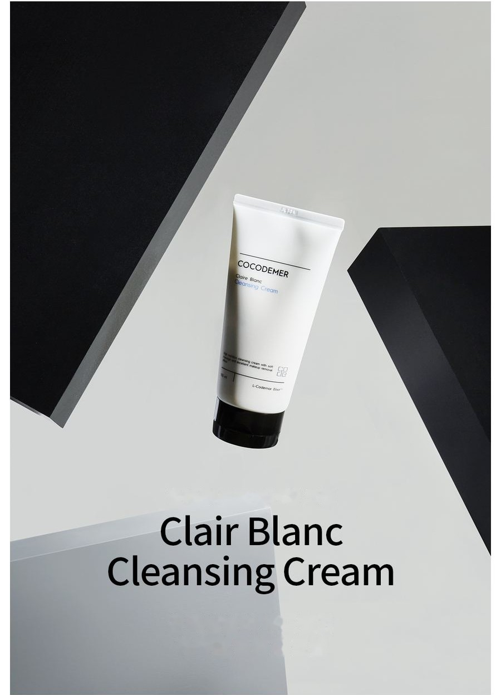
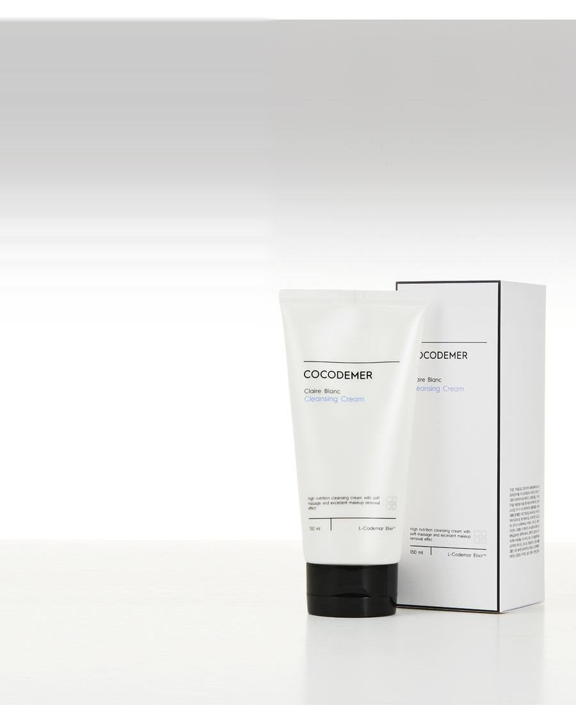
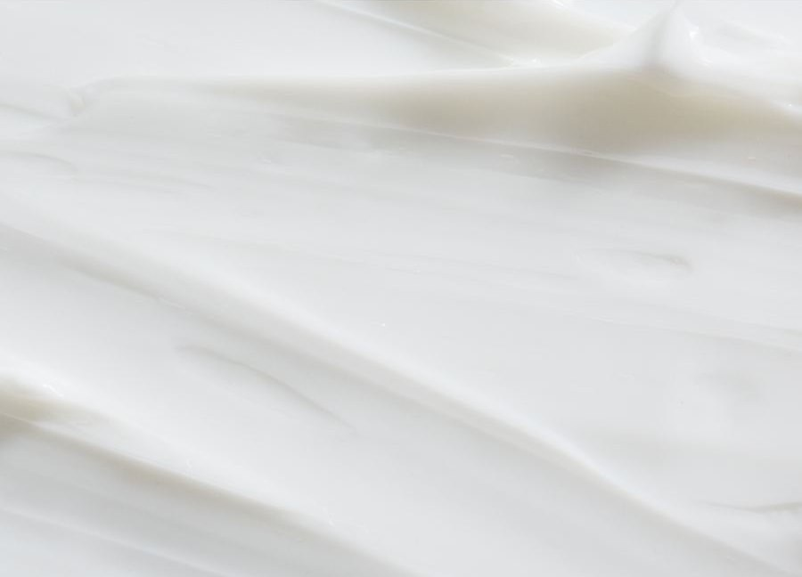
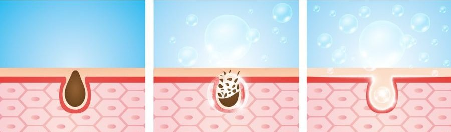

COCODEMER Clair Blanc Cleansing Cream
| Volume | 150ml |
|---|---|
| Suitable for | All skin types |
| Key technology | L-CODEMAR ELIXIR™ |
| Manufacturer · Responsible distributor | JUNGCOS CO., LTD. / COCODEMER CO., LTD. |
This product is not yet listed on the Smart Store. For purchases, please use the store, or contact us through the B2B inquiry.

A soft, hydrating cleansing cream with no sticky residue

A richly nourishing deep cleansing cream with a soft, rolling glide
Fine particles lift impurities away, cleansing gently and leaving skin soft and hydrated while removing even heavy make-up completely.
Naturally derived oils — macadamia, almond and green tea seed among them — smooth rough skin and leave it luminous after cleansing.
A skin-friendly plant oil base is liposome-encapsulated into micro-fine particles. On contact it melts quickly, lifting make-up away gently and with little irritation.
Naturally derived oils including macadamia oil, almond oil and green tea seed oil nourish skin even after cleansing, leaving it fresh-looking and hydrated.
Fine particles draw out impurities and lift make-up gently, smoothing rough texture and leaving skin hydrated
even after tissue-off.

Key Active Code

Its cleansing agents take off even heavy make-up in one pass, clearing residue and impurities from deep in the pores without the greasy film oils tend to leave.
It helps skin elasticity and texture, and with 30% water-soluble moisturising ingredients it keeps a healthy moisture balance, with no tightness after deep cleansing.
Ingredients akin to the skin's own sebum soften dead surface cells for gentle exfoliation, leaving skin clear and lustrous.
* The above describes the ingredients, not the finished product.
See the ingredient reference →
L-CODEMAR ELIXIR™
COCODEMER's proprietary technology.
Our multi-layer nano-gel emulsion encapsulation technology holds the core actives — coconut water, phytosterols, 20 amino acids and honey extract — in a stable complex. That complex is then built into a skin-friendly liposomal form that mirrors the structure of skin itself, for the most efficient delivery into the skin.
L-Codemar Elixir™ strengthens the bonds between skin cells. It restores a damaged barrier and forms a strong protective film, so hydration holds for longer.


How To Use
- Take a suitable amount into the palm and apply over the whole face.
- After 10–15 seconds, once the cream turns to an oil, roll it gently over the skin as if massaging.
- Wet the hands lightly to emulsify, then rinse several times with lukewarm water.
A richly nourishing deep cleansing cream with a soft, rolling glide
Fine particles lift impurities away, cleansing gently and leaving skin soft and hydrated while removing even heavy make-up completely.
Naturally derived oils — macadamia, almond and green tea seed among them — smooth rough skin and leave it luminous after cleansing.
A skin-friendly plant oil base is liposome-encapsulated into micro-fine particles. On contact it melts quickly, lifting make-up away gently and with little irritation.
Naturally derived oils including macadamia oil, almond oil and green tea seed oil nourish skin even after cleansing, leaving it fresh-looking and hydrated.
Fine particles draw out impurities and lift make-up gently, smoothing rough texture and leaving skin hydrated even after tissue-off.
Its cleansing agents take off even heavy make-up in one pass, clearing residue and impurities from deep in the pores without the greasy film oils tend to leave.
It helps skin elasticity and texture, and with 30% water-soluble moisturising ingredients it keeps a healthy moisture balance, with no tightness after deep cleansing.
Ingredients akin to the skin's own sebum soften dead surface cells for gentle exfoliation, leaving skin clear and lustrous.
* The above describes the ingredients, not the finished product.
L-CODEMAR ELIXIR™
COCODEMER's proprietary technology. Our multi-layer nano-gel emulsion encapsulation technology holds the core actives — coconut water, phytosterols, 20 amino acids and honey extract — in a stable complex. That complex is then built into a skin-friendly liposomal form that mirrors the structure of skin itself, for the most efficient delivery into the skin. L-Codemar Elixir™ strengthens the bonds between skin cells. It restores a damaged barrier and forms a strong protective film, so hydration holds for longer.
① Take a suitable amount into the palm and apply over the whole face. ② After 10–15 seconds, once the cream turns to an oil, roll it gently over the skin as if massaging. ③ Wet the hands lightly to emulsify, then rinse several times with lukewarm water.
| Net volume or weight | 150ml |
|---|---|
| Suitable for | All skin types |
| Shelf life / period after opening | 30 months from date of manufacture; use within 12 months of opening |
| How to use | Take a suitable amount into your palm and massage evenly over the face. Wipe away with a tissue, then double cleanse with a cleansing foam and water. |
| Cosmetics manufacturer | JUNGCOS CO., LTD. |
| Responsible distributor | COCODEMER CO., LTD. |
| Country of origin | Republic of Korea |
| Full ingredients (INCI) | Mineral Oil, Cocos Nucifera (Coconut) Water, Polysorbate 60, Methylpropanediol, Isopropyl Myristate, Paraffin, Caprylic/Capric Triglyceride, Cetyl Alcohol, 1,2-Hexanediol, Butylene Glycol, Glyceryl Stearate, Macadamia Ternifolia Seed Oil, PEG-100 Stearate, Centella Asiatica Extract, Ficus Carica (Fig) Fruit Extract, Honey Extract, Argania Spinosa Kernel Oil, Camellia Sinensis Seed Oil, Hydrogenated Lecithin, Limnanthes Alba (Meadowfoam) Seed Oil, Prunus Amygdalus Dulcis (Sweet Almond) Oil, Alanine, Arginine, Aspartic Acid, Beeswax, Carnitine, Ceramide NP, Citrulline, Dimethicone, Disodium EDTA, Ethylhexylglycerin, Glutamic Acid, Glutamine, Glycine, Hydroxyacetophenone, Isoleucine, Leucine, Magnesium Aluminum Silicate, Methionine, Ornithine, Phenylalanine, Phytosterols, Proline, Serine, Sorbitan Stearate, Threonine, Tocopheryl Acetate, Tryptophan, Tyrosine, Valine, Water, Xanthan Gum, Fragrance (Parfum) |
| Functional cosmetic approval | Not applicable |
| Precautions | 1. If the treated area shows red spots, swelling, itching or other abnormal reactions during or after use, or following exposure to direct sunlight, consult a specialist. 2. Avoid use on broken or wounded skin. 3. Storage and handling a) Keep out of reach of children. b) Store away from direct sunlight. |
| Quality guarantee | In the event of a defect, compensation is provided in accordance with the Consumer Dispute Resolution Standards published by the Korea Fair Trade Commission. |
| Customer enquiries | 010-3307-9341 / cocodemer@cocodemer.co.kr |
* Required disclosure under Korean cosmetics labelling and advertising rules. This is a reference translation; for the certified ingredient declaration, CPSR or CoA, please contact us through the B2B enquiry.